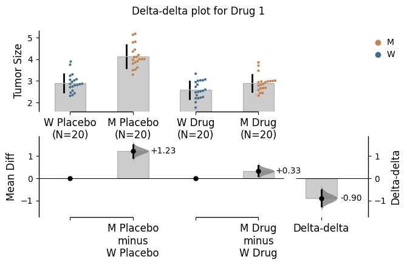
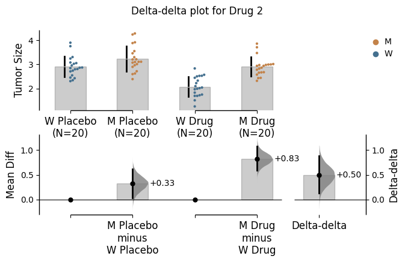
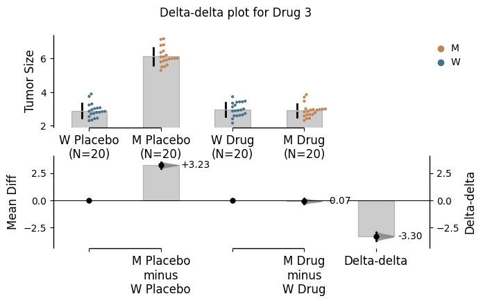
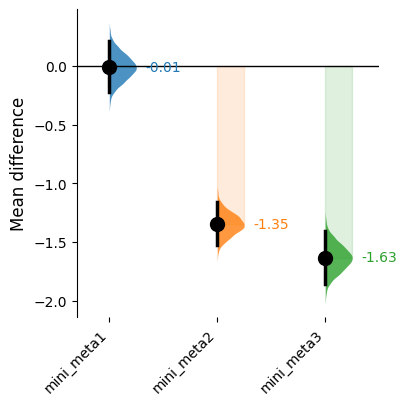
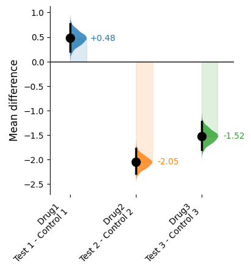
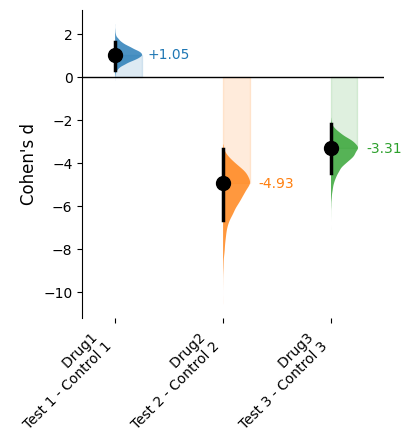

Explanation of how to use forest_plot for contrast objects e.g delta-delta and mini-meta or regular deltas.
In DABEST v2025.03.27, we introduce a new function to plot separately calculated effect sizes in the same axes to allow direct visual comparisons.
Currently you can make a forest plot for delta-delta, mini-meta, or standard delta effect sizes. In addition, for delta-delta and mini-meta experiments, you can also plot the effect sizes of the original comparisons alongside the delta-delta/mini-meta measurement.
Load libraries
import numpy as npimport pandas as pdimport dabestimport matplotlib.pyplot as pltimport dabest print("We're using DABEST v{}".format(dabest.__version__))
Numba compilation complete!
We're using DABEST v2025.10.20
Delta-delta effects
First please revisit the notebook Delta-Delta Tutorial for how to generate a delta-delta effect size. We will generate three of them plot them into the same axes. Here we test the efficacy of 3 drugs named Drug1, Drug2 , and Drug3 on a disease-causing mutation M based on disease metric Tumor Size. We want to know how the three drugs fare in ameliorating the phenotype metric Tumor Size.
Wildtype
Mutant
Drug1
XD1, W
XD1, M
Placebo
XP1, W
XP1, M
Wildtype
Mutant
Drug2
XD2, W
XD2, M
Placebo
XP2, W
XP2, M
Wildtype
Mutant
Drug3
XD3, W
XD3, M
Placebo
XP3, W
XP3, M
In each scenario, there are two Treatment conditions, Placebo (control group) and Drug (test group). There are two Genotype's: W (wild type population) and M (mutant population). Additionally, each experiment was conducted twice (Rep1 and Rep2). We will perform several analyses to visualise these differences in a simulated dataset. We will simulate three separte datasets below.
Creating a demo dataset
from scipy.stats import normdef create_delta_dataset(N=20, seed=9999, second_quarter_adjustment=3, third_quarter_adjustment=-0.1): np.random.seed(seed) # Set the seed for reproducibility# Create samples y = norm.rvs(loc=3, scale=0.4, size=N*4) y[N:2*N] += second_quarter_adjustment y[2*N:3*N] += third_quarter_adjustment# Treatment, Rep, Genotype, and ID columns treatment = np.repeat(['Placebo', 'Drug'], N*2).tolist() rep = ['Rep1', 'Rep2'] * (N*2) genotype = np.repeat(['W', 'M', 'W', 'M'], N).tolist() id_col =list(range(0, N*2)) *2# Combine all columns into a DataFrame df = pd.DataFrame({'ID': id_col,'Rep': rep,'Genotype': genotype,'Treatment': treatment,'Tumor Size': y })return df# Generate the first dataset with a different seed and adjustmentsdf_delta2_drug1 = create_delta_dataset(seed=9999, second_quarter_adjustment=1, third_quarter_adjustment=-0.5)# Generate the second dataset with a different seed and adjustmentsdf_delta2_drug2 = create_delta_dataset(seed=9999, second_quarter_adjustment=0.1, third_quarter_adjustment=-1)# Generate the third dataset with the same seed as the first but different adjustmentsdf_delta2_drug3 = create_delta_dataset(seed=9999, second_quarter_adjustment=3, third_quarter_adjustment=-0.1)
Loading data
unpaired_delta_01 = dabest.load(data = df_delta2_drug1, x = ["Genotype", "Genotype"], y ="Tumor Size", delta2 =True, experiment ="Treatment")unpaired_delta_02 = dabest.load(data = df_delta2_drug2, x = ["Genotype", "Genotype"], y ="Tumor Size", delta2 =True, experiment ="Treatment")unpaired_delta_03 = dabest.load(data = df_delta2_drug3, x = ["Genotype", "Genotype"], y ="Tumor Size", delta2 =True, experiment ="Treatment")contrasts = [unpaired_delta_01, unpaired_delta_02, unpaired_delta_03]
Generate delta-delta plots for each datasets
To create a delta-delta plot, you simply need to set delta2=True in the dabest.load() function and mean_diff.plot()
In this case,x needs to be declared as a list consisting of 2 elements, unlike most cases where it is a single element. The first element in x will represent the variable plotted along the horizontal axis, and the second one will determine the color of dots for scattered plots or the color of lines for slope graphs. We use the experiment input to specify the grouping of the data.
f1 = unpaired_delta_01.mean_diff.plot( contrast_label='Mean Diff', fig_size = (7, 4), raw_marker_size =1, contrast_marker_size =5,);f1.suptitle('Delta-delta plot for Drug 1');f2 = unpaired_delta_02.mean_diff.plot( contrast_label='Mean Diff', fig_size = (7, 4), raw_marker_size =1, contrast_marker_size =5,);f2.suptitle('Delta-delta plot for Drug 2');f3 = unpaired_delta_03.mean_diff.plot( contrast_label='Mean Diff', fig_size = (7, 4), raw_marker_size =1, contrast_marker_size =5,);f3.suptitle('Delta-delta plot for Drug 3');



Generate a forest plot
This will allow for comparisons of different Drug effects.
Key Parameters:
data: A list of dabest objects
labels: A list of labels for the dabest objects. E.g., ['Drug1', 'Drug2', 'Drug3']
effect_size: For delta-delta experiments, you can select the effect size metric from "mean_diff", or "hedges_g" / "delta_g". The default is "mean_diff".
ci_type: A string specifying the confidence interval type to use. The options are either bca or pct. Default is bca.
Note: “hedges_g” and “delta_g” can be used interchangeably for delta-delta experiments - both plot hedges_g regular effect sizes and our Delta g delta-delta effect size.
horizontal: A boolean input (True/ False) to adjust the plot orientation. The default is vertical orientation (False)
ax: Optional argument to specify an existing matplotlib axes (otherwise a standalone figure will be created)
See the Controlling aesthetics section for more information on how to alter the aesthetics of the plots.
Generate a forest plot with delta effect sizes alongside the delta-delta effect sizes
If you want to plot the original effect sizes alongside the delta-delta effect sizes, you can do so by utilising the idx parameter. This parameter takes a tuple/list of indices of the original effect sizes you want to plot.
For example, if you want to plot only the first effect size and the delta-delta effect size for each of the three dabest object supplied, you can do so by setting idx=[[0, 2],[0, 2],[0, 2]].
Selecting normalised effect sizes via hedges_g or delta_g
Remember, hedges_g and delta_g are interchangeable for delta-delta experiments. However, when plotting the original effect sizes alongside the delta-delta effect sizes, you should note that hedges_g effect sizes will be plotted alongside the Delta g effect sizes.
Next we will generate a similar forest plot for mini-meta effect sizes. Please revisit the notebook Mini-Meta Tutorial on how to generate a mini-meta effect size. We will generate three mini-meta effect sizes for three separate mini-meta analyses:
Note: the only effect size metric currently available for mini-meta is "mean_diff".
Creating a demo dataset
def create_mini_meta_dataset(N=20, seed=9999, control_locs=[3, 3.5, 3.25], control_scales=[0.4, 0.75, 0.4], test_locs=[3.5, 2.5, 3], test_scales=[0.5, 0.6, 0.75]): np.random.seed(seed) # Set the seed for reproducibility# Create samples for controls and tests controls_tests = []for loc, scale inzip(control_locs + test_locs, control_scales + test_scales): controls_tests.append(norm.rvs(loc=loc, scale=scale, size=N))# Add a `Gender` column for coloring the data gender = ['Female'] * (N //2) + ['Male'] * (N //2)# Add an `ID` column for paired data plotting id_col =list(range(1, N +1))# Combine samples and gender into a DataFrame df_columns = {f'Control {i+1}': controls_tests[i] for i inrange(len(control_locs))} df_columns.update({f'Test {i+1}': controls_tests[i +len(control_locs)] for i inrange(len(test_locs))}) df_columns['Gender'] = gender df_columns['ID'] = id_col df = pd.DataFrame(df_columns)return df# Customizable dataset creation with different argumentsdf_mini_meta01 = create_mini_meta_dataset(seed=9999, control_locs=[3, 3.5, 3.25], control_scales=[0.4, 0.75, 0.4], test_locs=[3.5, 2.5, 3], test_scales=[0.5, 0.6, 0.75])df_mini_meta02 = create_mini_meta_dataset(seed=9999, control_locs=[4, 2, 3.25], control_scales=[0.3, 0.75, 0.45], test_locs=[2, 1.5, 2.75], test_scales=[0.5, 0.6, 0.4])df_mini_meta03 = create_mini_meta_dataset(seed=9999, control_locs=[6, 5.5, 4.25], control_scales=[0.4, 0.75, 0.45], test_locs=[4.5, 3.5, 3], test_scales=[0.5, 0.6, 0.9])
f_forest_minimeta = dabest.forest_plot( data = contrasts_mini_meta, labels=['mini_meta1', 'mini_meta2', 'mini_meta3']);

Generate a forest plot with delta effect sizes alongside the mini-meta effect sizes
If you want to plot the original effect sizes alongside the mini-meta effect sizes, you can do so by utilising the idx parameter. This parameter takes a tuple/list of indices of the original effect sizes you want to plot.
For example, if you want to plot only the first effect size and the mini-meta effect size for each of the three dabest object supplied, you can do so by setting idx=[[0, final_idx],[0, final_idx],[0, final_idx]] (where final_idx is the index of the last contrast object which will be the mini-meta effect size.)
Next we will generate a similar forest plot of regular delta effect sizes. In the example below, we will generate three regular mean_diff experiments. Here, we will only plot the effect size between the first group (Test 1 - Control 1) for each of the three dabest object supplied.
dabest.forest_plot(contrasts_deltas, idx=((0,),(0,), (0,)), labels=['Drug1 \nTest 1 - Control 1', 'Drug2 \nTest 2 - Control 2', 'Drug3 \nTest 3 - Control 3']);

Unlike delta-delta and mini-meta experiments, here you can choose between more effect size metrics (where applicable): mean_diff, cohens_d, cohens_h, hedges_g, and cliffs_delta
dabest.forest_plot(contrasts_deltas, idx=((0,),(0,), (0,)), effect_size ='cohens_d', labels=['Drug1 \nTest 1 - Control 1', 'Drug2 \nTest 2 - Control 2', 'Drug3 \nTest 3 - Control 3']);

Controlling aesthetics
The main aesthetic parameters for the forest_plot function are:
fig_size: The size of the figure
horizontal: A boolean input (True/ False) to adjust the plot orientation. The default is vertical orientation (False)
custom_palette: A list or dictionary of colors, one for each contrast object. E.g., ['gray', 'blue', 'green'] or {'Drug1':'gray', 'Drug2':'blue', 'Drug3':'green'} or a set of colors from seaborn color palettes.
marker_size: The size of the markers for the effect sizes. The default is 10.
contrast_alpha: Transparency level for violin plots. The default is 0.8.
contrast_desat: Saturation level for violin plots. The default is 1.
labels_rotation: Rotation angle for contrast labels. The default is 45 (for horizontal=False).
labels_fontsize: Font size for contrast labels. The default is 10.
title: The plot title. The default is None.
title_fontsize: Font size for the plot title. The default is 16.
ylabel: The axis label of dependent variable (Y-axis for vertical layout, X-axis for horizontal layout). The default will be given via the effect size selected. (eg., "Mean Difference" for "mean_diff")
ylabel_fontsize: Font size for the axis label (Y-axis for vertical layout, X-axis for horizontal layout). The default is 12.
ylim: Limits for the dependent variable (Y-axis for vertical layout, X-axis for horizontal layout). The default is None.
yticks: Custom ticks (Y-axis for vertical layout, X-axis for horizontal layout) for the plot. The default is None.
yticklabels: Custom tick labels (Y-axis for vertical layout, X-axis for horizontal layout) for the plot. The default is None.
remove_spines: If True, removes plot spines (except the relevant dependent variable spine). The default is True.
violin_kwargs: A dictionary of keyword arguments for the violin plots.
The default violin_kwargs = {"widths": 0.5, "showextrema": False, "showmedians": False, "vert": not horizontal}
zeroline_kwargs: A dictionary of keyword arguments for the zero line. The default is None.
The default zeroline_kwargs = {"linewidth": 1, "color": "black"}
marker_kwargs: A dictionary of keyword arguments for the effect size markers. The default is None.
You can add reference bands by supplying a list/tuple to the reference_band argument, indicating the contrast to highlight. None are displayed by default.